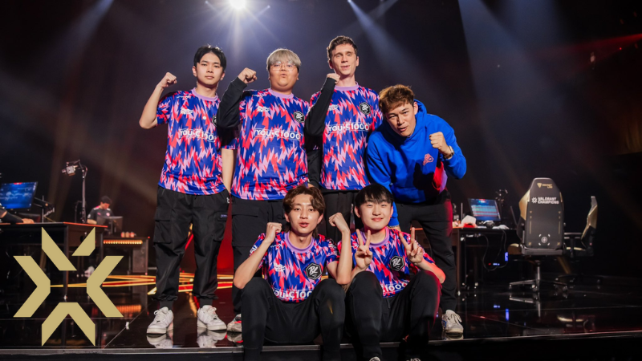

Create a Beautiful eCommerce Website Easily
On 'Not You Too', Drake sings about being betrayed by a woman that he didn't expect to. He scolds her by telling her “not you too,” implying that he has been spited by multiple women in the past. Chris Brown provides background vocals throughout the song but does not have a verse of his own.
